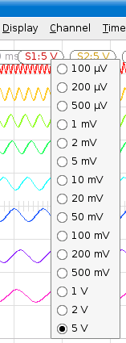
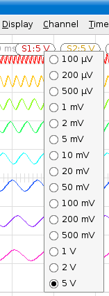

Osqoop is a multi-platform open source software oscilloscope based on Qt 4. It connects to various hardware data sources such as the sound input or a dedicated USB board. Osqoop provides real-time signal processing through a plugin architecture.
If you only want to use Osqoop (not develop for it) and are running Windows or Ubuntu Dapper, feel free to download the binary distributions from our website.
If you want to compile Osqoop from sources, please follow the developers documentation. Those pages are generated from source code and content of docsource/ directory using the Doxygen tool.
When first starting Osqoop, you are prompted for a data source. Once the data source is chosen, the Osqoop main screen is shown. It looks a bit like this, although simpler (you only see the main view):
 

In the top left of the main view, a rounded box with the time scale (the amount of time per horizontal division) is visible. Next right to it, a line of boxes (one per channel) is show. On each box, if the channel is visible, the vertical resolution (as the amount of voltage per vertical division) is displayed. Left clicking on a channel box toggles the channel visible and hidden. Right clicking on the time scale (see picture at left) or on a channel (see picture at right) box displays a drop-down menu to change their values.
Both those operations are also accessible through the "Channel" and "Timescale" main menus. This can be usefull, for instance when the channels boxes are hidden because the window is not wide enough.
Each visible channel has a small triangle at left of main view showing the position of the zero. If you press and hold the left mouse button on this triangle, you can move the channel vertically. While moving, a horizontal line of the channel color is displayed in order to clearly show the channel position. Right upper the triangle, the name of the channel is shown. If you left click on it, an edit box is displayed to change the channel's name. If you press enter, the name of the channel is changed. If you click somewhere else, the old name is kept.
You can set a trigger on any edge of any channel. The trigger mode and channel can be set through the "Trigger" menu. Once a trigger is active on a visible channel, it is displayed as a horizontal line (level) and vertical line (time) crossing at the trigger point. If you press and hold the left mouse button on that point, you can freely move the time and value of the trigger.
Osqoop has an integrated zoom. To zoom, press the Z key or activate zoom through the "Display" menu. When zoom is activated, the bottom part of the window displays the zoomed view. Furthermore, you can set the zoom start time by left clicking in the main view and set the zoom end time by right clicking in the main view. Those two times are indicated by vertical grey lines. Between them, a zoom info box shows the duration and the frequency of the zoomed view. If you press and hold the left mouse button in this box, you can drag the zoomed view.
Several additional display options are available in the "Display" menu:
Main view can be printed or exported to PDF (suitable for printing in a report). Acquired data (all or only displayed ones) can be exported as text (suitable for loading in a math software). Data printing and export is accessible through the "File" menu.
Signal processing can be applied on acquired data in real-time. This is done through plugins. When plugins are activated, they are displayed in a plugin parameter area at the right side of the main view as show in the screenshot above. It is thus possible to change plugins parameters in real time. To load and configure plugins, select "Configure" in the "Plugin" menu, which displays the plugin configuration dialog box. Plugins configurations can also be saved and reloaded through the "Plugin" menu.
The left side of the plugin configuration dialog box contains a list of available plugins. If you let the cursor still for a while over a plugin, a detailed description is shown in a tooltip. If you double-click on a plugin (or select it and click "Use"), the plugin appears in the "Active" grid.
The "Active" grid has one line per active plugin. For each active plugin, the inputs (I) and outputs (O) can be changed by right clicking on the corresponding cell and choosing the channel. By default, acquisition channels are named Sx while others are named Ex. Cells can be empty if the plugin doesn't have enough input or output channels to fill the whole grid width. The two small green arrows can be used to change the order of plugins application. The red cross can be used to remove a specific plugin from the active area.
Right under the active plugins area, a spin-box can be used to add more channels (or remove unused ones) for signal processing. The additional channels appear in grey in the main view.